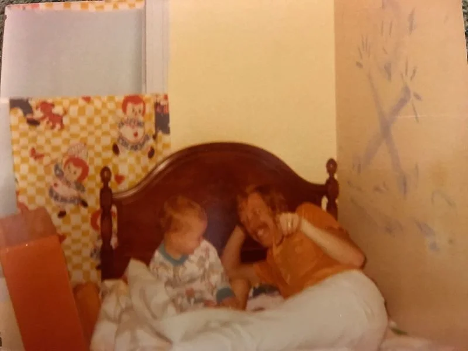
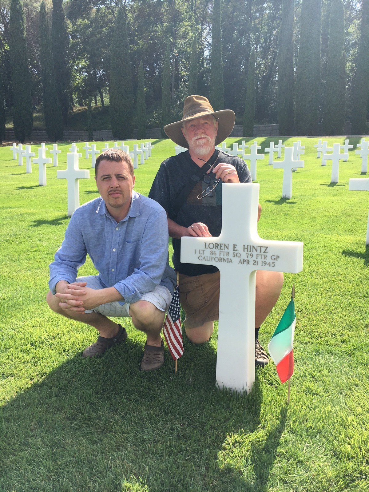
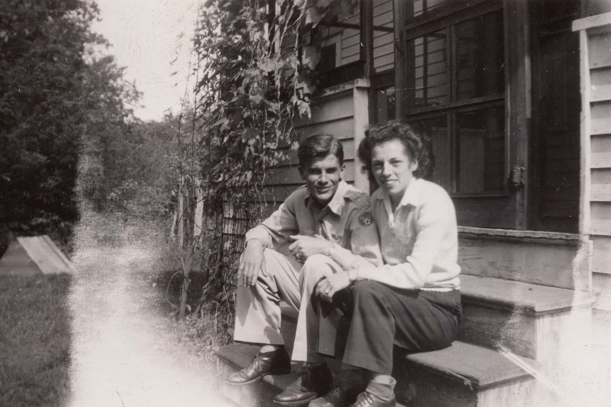
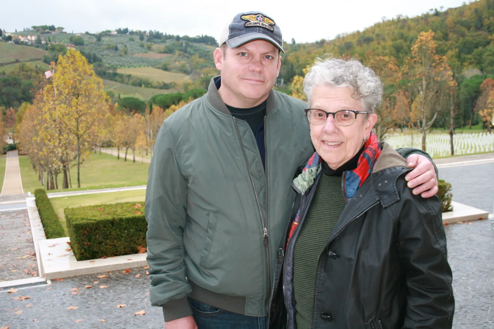
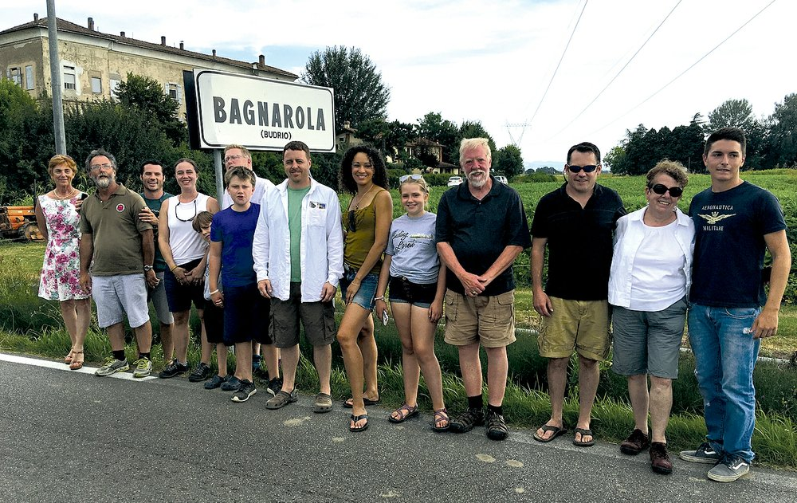

Three generations. One journey home.
Finding a grandfather.
Holding on to a dad.
The search begins with a plane. The heart of it is the people left behind.
Stephen is raising three daughters in Arkansas, balancing family life with his hopes for a writing career, and wondering what comes next. The person he talks to about almost everything is his dad, Martin.
Then his cousin Hans Wronka has news. The lead investigator in the search for Loren’s downed plane, Hans has spent years following the evidence. Now the family may finally have found the P-47 flown by Martin’s father, Loren, who died in Italy in the final weeks of WWII—before Martin was born.
The journey brings Stephen, his dad, brother, and sister to Italy: long meals, familiar jokes, old habits, and the astonishing experience of watching a piece of their family history emerge from the earth. With Martin’s health worsening, the adventure becomes a reckoning with fatherhood, forgiveness, and the time they have together.


The family behind the search
A life remembered.
A family brought together.



The history behind the feature
See the real story unfold.
Explore the search, the discovery, and the remembrance through these videos from the family’s collection.
The documented journey
A story that reaches beyond our family.
Their father’s plane was shot down in WWII. This weekend, they finally buried him
CNN follows Gretchen and Martin’s journey to honor their father after the recovery of his aircraft and additional remains in Italy, bringing generations of the family together for his burial.
Read CNN’s story on KSAT ↗ The National WWII Museum ↗The search for First Lieutenant Loren E. Hintz
Follow the research and perseverance that brought the family to Italy.
AirCorps Aviation ↗Seventy-one years beneath an Italian field
The recovery of Loren’s P-47, his remains, and his dog tags in July 2016.
AirCorps Aviation ↗A piece of Loren’s plane lives on
A recovered handle finds a new home in a restored P-47—a physical connection across generations.
Finding Loren · Written by Stephen Hintz
What do we leave our children?
A feature about the fathers we never knew, the ones we can’t imagine losing, and the fathers we are still learning to become.
Discuss the Project